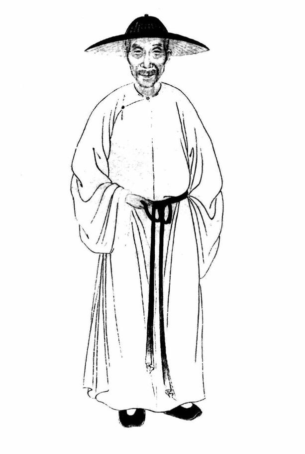
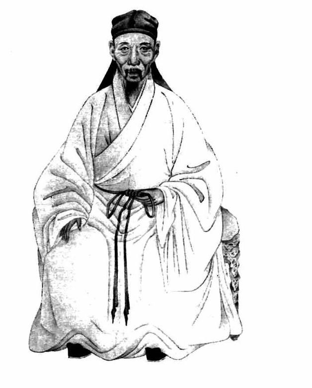

六
披阅史志，一日掩卷之余，忽然闪出这样的认识：既非殉国的烈士，亦非始终不渝、一息尚存便尽其绵薄的抗争者，相反，倒是某些名节有亏、曾入泥淖的转变者，于遗民现象的表现最有力焉。
不妨明言，这认识来自钱谦益的《有学集》。这是他乙酉年以后或者说主要是入清后的作品结集。
截于乙酉年，我对钱氏印象极差。那种感受，甚至引起了对东林—复社的一定动摇。我很不明白，以钱氏低劣的人品，居然在这个进步的阵营中引领风骚、深孚人望，道理何在？从甲申国变后南都定策，到乙酉五月南京投降，钱谦益没做过一件让人佩服的事。他力主迎立潞王，漂亮的说辞是潞王较为“贤明”（其实并无此事），内里则的确是以党私摒弃纲伦，所以客观上授人以柄，使得马、阮等能够掌握主动，连累史可法被逐出南京，最终令弘光朝一开局就建立在不利的政治基础上。而造成这种局面后，钱谦益又尽显小人态，曲结马士英，几乎可以说沆瀣一气。又在最后关头，端出道学架子，阻止朱由崧迁都。而最为不齿的，是他转瞬之间变成降敌者，与赵之龙分别领衔文武大臣，献国都于满清。
《小腆纪年附考》曾引乾隆皇帝的话：“谦益一有才无行之人。”徐鼒且附以“真万世斧钺之公哉！”的评论。[29]如仅至乙酉年止，此论允谓精当。然通观钱氏一生，则既不精当，更谈不上公正，实际反倒应说是恼羞成怒的泼污之言。为什么？因为钱谦益于其后期生涯，大觉昨非，深切忏悔，抽身而退，以遗民姿态终死。对此，作为清朝皇帝的乾隆，詈以“无行”颇自然，而在钱氏本人，我们却认为是去“无行”而就“有德”。
钱氏投降后，官礼部侍郎管秘书院事，充修明史副总裁。但在职仅六月，即以病为由辞归。那时他五十三岁。康熙三年卒，终年八十四岁。注视这一时间表，我意识到两点：一、钱氏抽身极早；二、他用剩下的绝大多数光阴证实并守住了气节。
他的告归，名为身疾，实出心病；这样的消息，可以透过归里后的诗作而看出。《有学集》有两首写给著名遗民林古度的诗：
抗疏捐躯世所瞻，裳衣戌削貌清严。可知酌古陈同甫，应有承家郑所南。
文甫为人陈亮是，兴公作传水心同。永康不死临安在，千古江潮恨朔风。[30]
诗题《观闽中林初文孝廉画像读徐兴公传书断句诗二首示其子遗民古度》。初文是林古度之父林章的表字，嘉靖间抗倭志士。诗中，“陈同甫”和“永康”都是指南宋爱国者陈亮（他是永康人）；郑所南是南宋遗民，曾有诗句“此世只除君父外，不曾重受别人恩”；“水心”即南宋大儒叶适，他与陈亮为挚友并给他写了墓志铭，也是当时有力的主战者。抗倭、陈亮、郑所南、叶适……这样一些故事、英名布满诗行，所堆砌起来的是什么意象，不待明言。更况最后那句“千古江潮恨朔风”，“朔风”之指一目了然，“千古江潮”四字则道尽东晋以来长江所见证的一揽子历史，至于“恨”字，简直就溢于言表了。此诗之作，据编者目录所示，时间范围“起乙酉年，尽戊子年”，亦即最迟不超过1646年。
倘使诗篇由于用典的缘故，语意多少有些曲折，那么到了文章里，钱谦益的“立场”就彻底袒露无遗了。我们来看他为路振飞写的一篇纪念文章。据文首“故太傅路文贞公薨于粤。后十年，长子泽溥，迎柩来吴，葬洞庭之东山，属昆山归庄撰行状，请余书其墓隧之碑”，可知写作时间为1659年（路振飞卒于永历三年，即1649年）。路振飞以前我们多次提到，他在甲申国变至南都定策这段非常时期，扼淮阴要冲，整甲缮兵，保民全境，一切井井有条、气象甚严，但因忤犯马士英，被后者以其党田仰所代，弘光末，更遭到马党纠问，险兴狱；南京、杭州继失，他追随朱聿键于闽粤，1646年“道卒于顺德”。钱氏此文，对这位南明良臣极予褒扬，强烈突出“善类”之谊以及对立面“丑类”之恶，如云：
当是时，阁部史可法以孤镇扬州，倚公为左右手。公每奏捷，阁部飞章亦至。士英忌滋甚。
而比之褒善贬恶，更惊人的是钱谦益毫不屑于隐讳他的明之遗民态度，对清朝军队公然以“北兵”相称，且全文一律奉明朝正朔。如曰：“乙酉八月，唐王即位于福州，改元隆武”；专门称颂路振飞“造隆武四年历，用文渊阁印颁行，所以系人心、存大统也”；对路振飞生卒年，则书为：“公生于万历庚寅九月二十五日，卒于永历三年己丑四月二十二日”，将清朝纪年彻底摒而不用。其果敢也若此！文章又特意记存、彰显路振飞的临终遗言：“生为明臣，没为明鬼。”复于末尾自称：“崇祯之终，永历之始。有臣一个，敬告青史。”而与传主求得完全的精神认同与共鸣。[31]
假如碑文墓表这类东西，还有作秀或被怀疑作秀的余地——在古人，此类文章不少实属虚文——那么，他为门生瞿式耜所写悼文就没有任何作秀的必要，而完全是真情的流露了。此盖出三点：其一，只是写给自己看的，不是为了拿去示人；其二，作者与对方情谊非同一般，无秀可作；其三，此文之写，纯因感兴迸发，积郁之深，而致笔不能不命。
说到南明后期的历史和政治，瞿式耜便是最最重要的人物；如果弘光间第一人是史可法，那么永历朝的这个位置该属于瞿式耜。他们两位，品格、价值、作用都极相似。瞿氏在南陲独撑大局，行状堪比刘备托孤之后的诸葛亮，永历四年（1650）在桂林被捕，慷慨就义于仙鹤岭。
早在三十年前，瞿式耜即拜钱谦益为师，师生间情深谊厚，牧斋第一部文集《初学集》，即由瞿式耜率众同门熬心费力为老师刻成。晚年钱谦益忆及当初，仍为之铭肤镂骨：
《初学》往刻，稼轩（式耜号）及诸门人，取盈百卷，敢假灵如椽之笔，重加删定，汰去其蘩芿，而诃其可存者，或什而取一，或什而取五，庶斯文存者得少薙稂莠，而向所自断者，亦藉手以自解于古人。[32]
而在政治和仕途中，多年来瞿式耜无愧师门，反倒是钱谦益作为老师尊严扫地。乙酉后，师生二人，一个曾觍颜苟且，一个却履仁蹈义，可谓渭浊泾清。我没有凭据说钱谦益幡然省悔，中间有学生刺激的作用，但推而想之，如此义肝忠胆的学生，必能令为人师表的钱氏扪心难安。
自从瞿式耜南下抗清，钱谦益即与之消息睽隔。他自然知道这位得意门生在做什么，只是无由沟通交流。而痛悔以来，他其实必有满腹心曲想对式耜言说。事实上，他连瞿式耜牺牲就义的消息也毫不知情，而是足足过了十年，突然闻此噩耗。刹那间，苦痛伤悲，百感交集；此正是文前之序所言：
瞿临桂（瞿氏受封临桂伯）以庚寅（1650）十月殉义于桂林。越十年辛丑，厥孙昌文以《粤中纪事》一编，缮写来请。于时五日（端午节），方食角黍，放箸而叹，援笔凭弔，遂以《角黍》命篇。[33]
端午之日，方食糯粽，由屈原想到了瞿式耜——这既是钱谦益对门生的评价，同时未尝不是一种揽镜自嫌。为了表示以式耜比屈子的意思，文章特地采取了楚辞的文体。写得最用力的，是这几行：
屈子沉魄于水府兮，吾子煅骨于灰场。扇腥风于毒炭兮，炎桂林为昆冈。藏吾血三年而成碧兮，虽燔飏其何妨。[34]
“腥风”即满清，古时常以“腥膻”蔑指异族。它们说，屈原沉冤于水泊，式耜献身于战火；而燃起战火的，是满清这“腥风”、“毒炭”；式耜虽死，碧血丹心与世长存，虽化灰烟又何损于他？笔尖流泻这些词句时，钱谦益应该是为平生得学生若此而欣慰和光荣吧？“吾子”换成今语，好比称“我们的瞿先生”，是既敬重而又亲切热烈的口吻。
钱氏晚年，深为失足而痛楚，自责之苦无以复加。如与《江变纪略》作者徐世溥（《清史稿》作徐士溥）通信时说：
丧乱已后，忽复一纪，虽复刀途血道，频年万死，师恩友谊，耿耿余怀。自惟降辱死躯，奄奄余气，仰惭数仞，俛愧七尺。邮筒往来，握笔伸纸，辄复泪渍于袵、汗浃于北。声尘寂蔑，与吾巨源（徐世溥的表字），积不相闻，职此由也。
一纪，即十年。“数起于一，终于十，十则更，故曰纪也。”[35]就是说，至此钱、徐十年未通音讯了，原因是钱谦益无地自容，回避和故人来往。从信中看，这次亦是徐士溥因写《江变纪略》，欲就史事请教钱氏，而主动联络。“《江变纪略》，假太子者，一妄男子，谓是王驸马，亦非也。”这是钱谦益回答对假太子王之明案的看法。而我对以下一语很感兴趣：“旧辅，腐儒也，当少为赞予，以旌愚忠。”“旧辅”者，应系弘光间某大学士，但不知指谁。史可法、高弘图都不算“腐儒”，王铎似乎有点“腐”但却是假装的，其人心思颇滑，何况钱谦益不可能认为他值得“少为赞予”，故而这句落在谁身上尚待琢磨——此题外话也。
又于致方以智信中，以“乱后废人”自况，形容余生有如“昏天黑地，从漫漫长夜中过活”。[36]而自审、忏悔最深的一次，是将届八十之前，就族弟等欲为之祝寿而写的求免信。时在1661年，族弟钱君鸿提前给钱谦益一信，并附六百字长诗，“期以明年初度，长筵促席，歌此诗以侑觞。”钱谦益回信，说“开函狂喜”，然而“笑继以忭”，“俄而悄然以思，又俄而蹴然以恐，盖吾为此惧久矣。”活着或生命，于他，长久以来已如一块巨石。他觉得当不起祝寿这样的事。他比较了“祝”和“呪”这两个相像的字，“夫有颂必有骂，有祝必有呪，此相待而成也。有因颂而召骂，有因祝而招呪。”族弟虽出“颂”“祝”无疑，但自忖庆寿对于自己这种人却只有“骂”“呪”的意义。他严厉地自我谴责：
少窃虚誉，长尘华贯，荣进败名，艰危苟免。无一事可及生人，无一言可书册府。濒死不死，偷生得生。
认自己一无足取，全为失败之人生。人生如此，祝寿便是挨骂：“以不骂为颂，颂莫祎焉。以无呪为祝，祝莫长焉。”于是再次恳求：“子如不忍于骂我也，则如勿颂。子如不忍于呪我也，则如勿祝。”[37]

充满“反复”的钱谦益。
钱谦益，东林领袖。甲申国变后曾策划迎潞王，弘光即位，却与马、阮近迩，得为礼部尚书。清军薄城下，与赵之龙等以城降。到北京任清廷明史馆副总裁，仅一载托病归，从事地下反清活动。乾隆时入《贰臣传》。

明遗民、重要的反清思想家吕留良。
吕留良，字庄生，一字用晦，号晚村。明亡后他也曾屈服，应试为诸生，后深耻之：“谁教失脚下渔矶，心迹年年处处违。雅集图中衣帽改，党人碑里姓名非。苟全始信谈何易，饿死今知事最微。醒便行吟埋亦可，无惭尺布裹头归。”而坚定反清，其反清思想影响极大。
古云：“过而能改，善莫大焉。”又说：“人非圣贤，孰能无过？”不犯错，当然最好，但这样的人，世间少之又少。真正的恶，不在犯错，而在怙恶不悛，这才是分水岭。当代中国，不乏才情、地位、名望与钱谦益相埒并同样有很大污点的文人，但最终像他这样反躬自责、伯玉知非的，吾未之闻。读《有学集》，钱氏后三十年几无一日不在自审、自责中，哪怕只是读书这种平常事。他在致友人信中说，一日读《宋遗民传》，至“宋存而中国存，宋亡而中国亡”一句，即“抚卷失席”，坐都坐不住。[38]尤要指出，在钱谦益反思、悔过绝非嘴上说说、口舌之美。辞官不做、自我放归仅为其一，他自赎前愆更表现在倾以所有支持抗清义举。金鹤冲《钱牧斋先生年谱》云：
先生平生多难，或以货免。晚岁破产饷义师，负债益重。[39]
钱死后不久，讨债者即打上门来，柳如是竟至被逼自缢身亡。他死前还有一个故事：“卧病于东城故第，自知不起，贫甚，为身后虑”。所谓“身后”，是指棺木。这时，正好黄宗羲、吕留良等来探望，钱氏即以心事相告，同时提到有位当官的求其三文，“润笔三千”，但自己已不能捉笔，要黄宗羲代写：
先生自言贫困，以三文为请。太冲请少稽时日，先生不可，闭太冲书室，自辰至亥，三文悉就。《南雷诗历》云：“嘱笔完文抵债钱。”盖纪实也。[40]
曩者，曾从零星诗文粗知黄、钱交谊一直相厚，当时不解，以黄太冲疾恶如仇乃至不免刻薄的性情，怎能容下有偌大污点的钱谦益？及读《有学集》，释然。